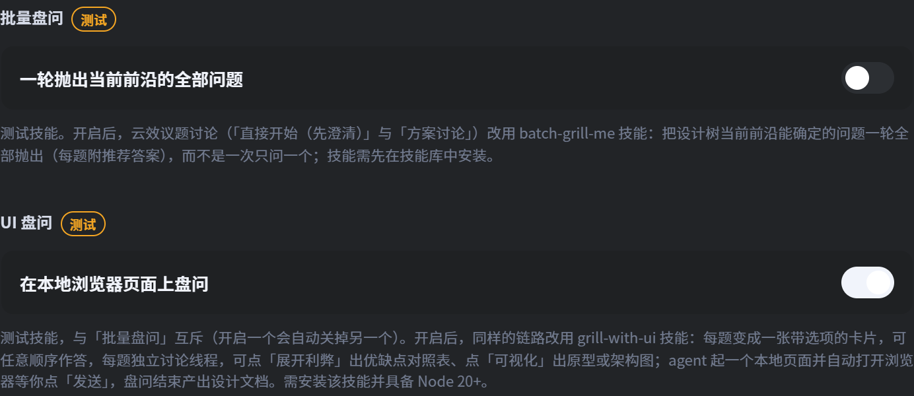
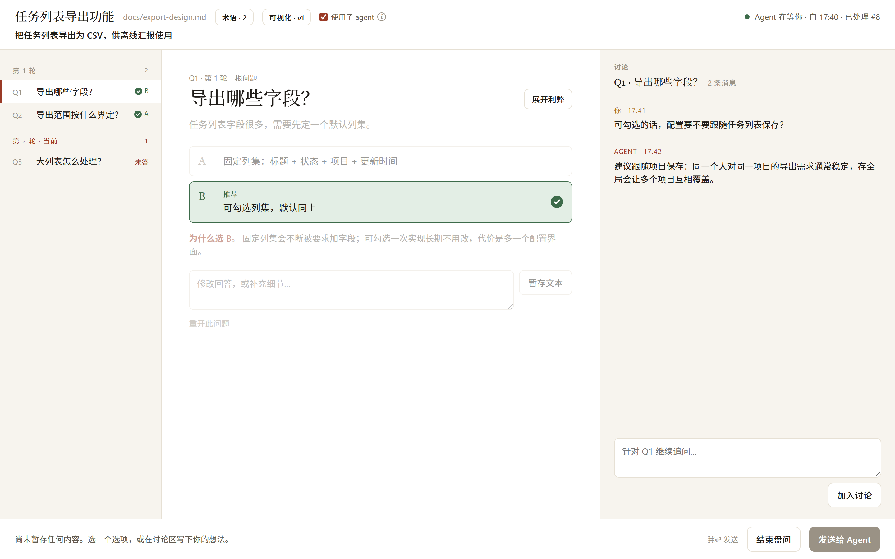
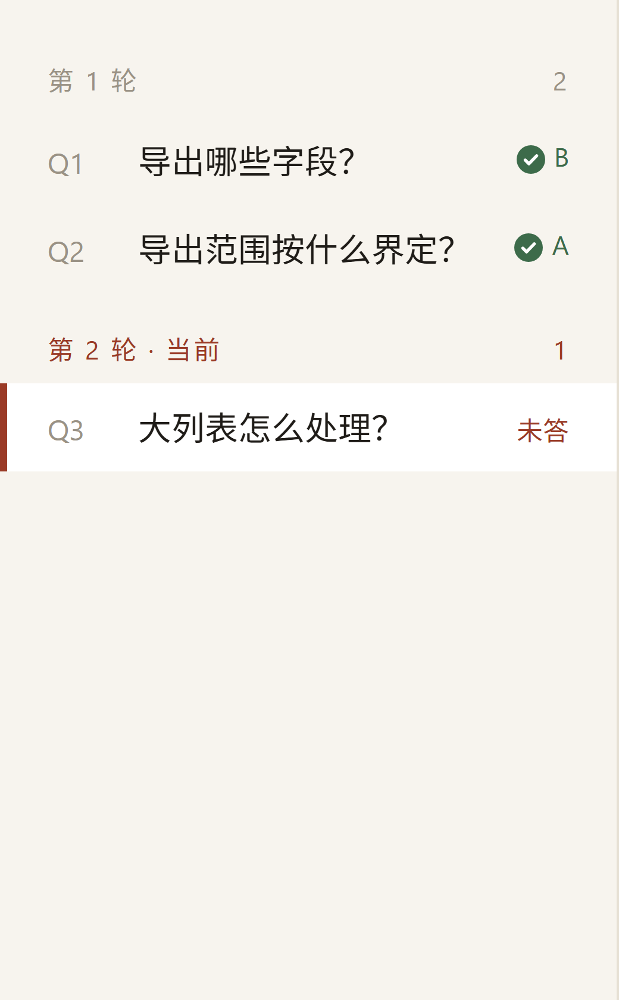
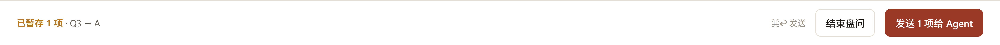
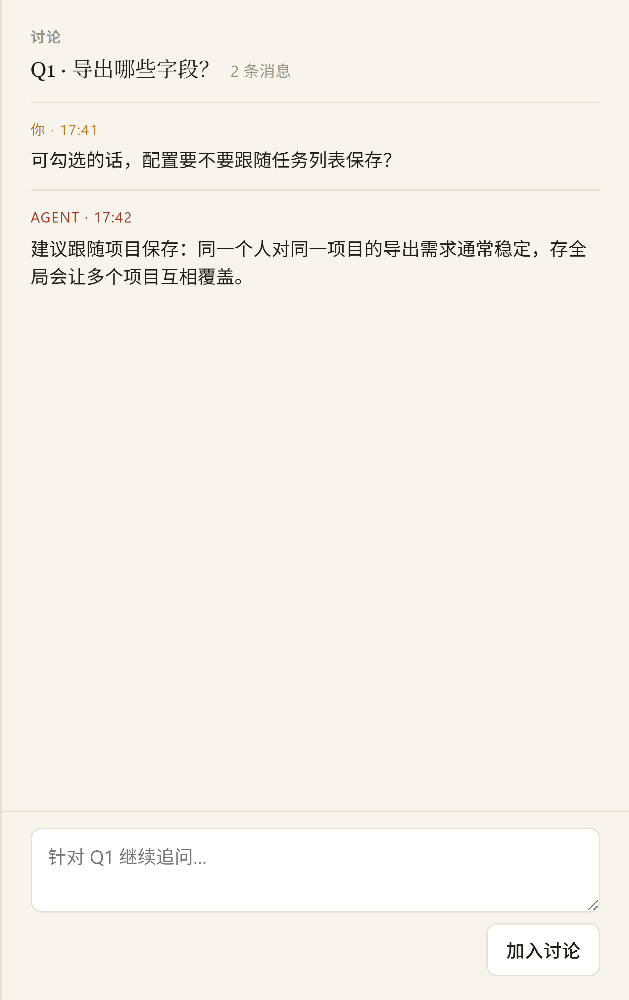
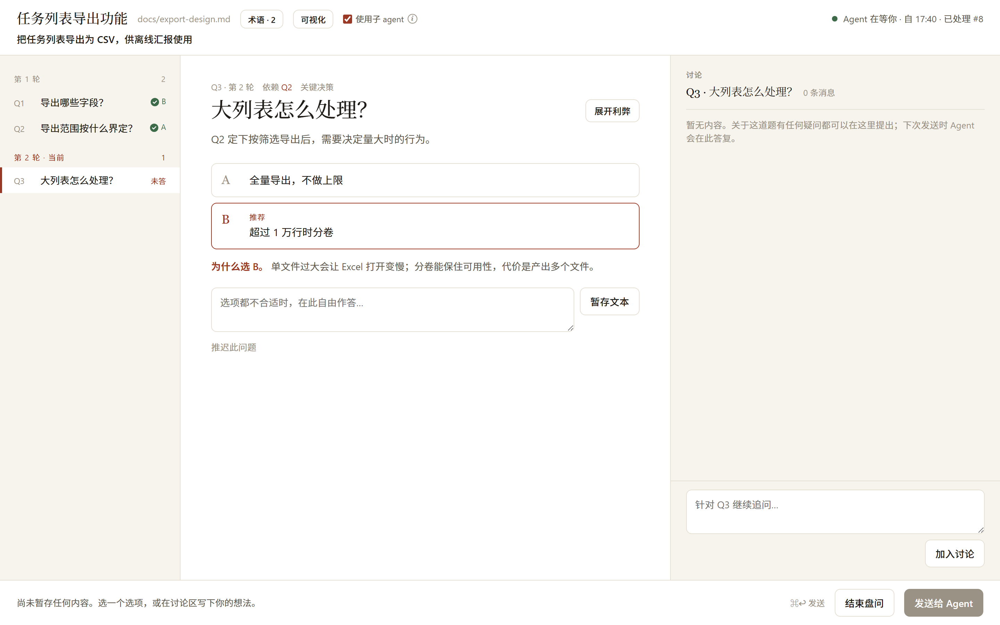
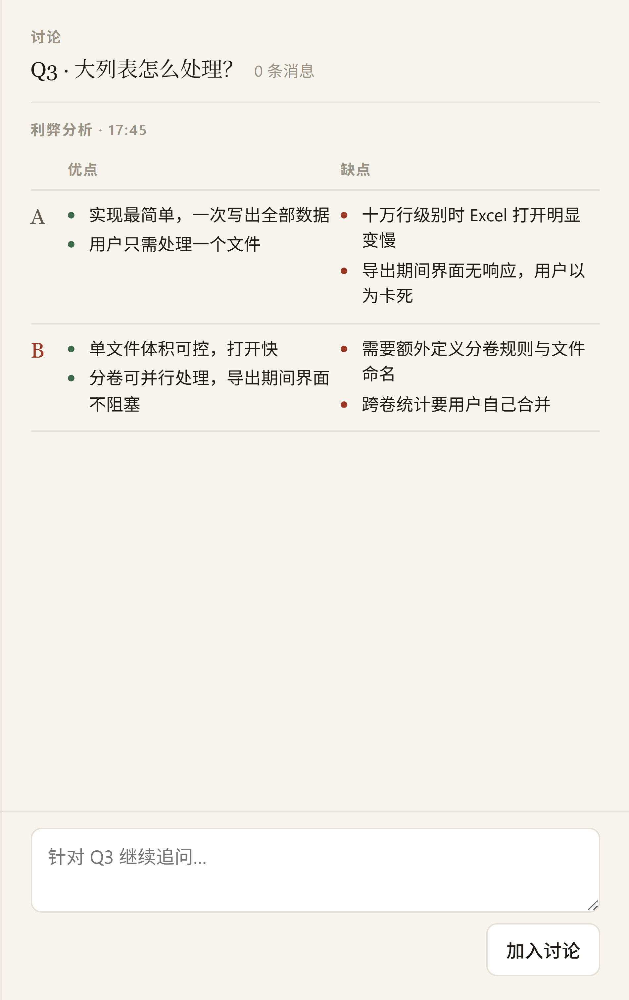
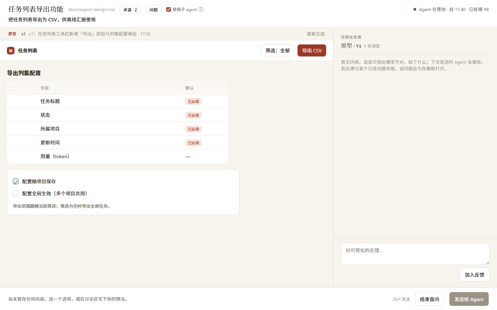
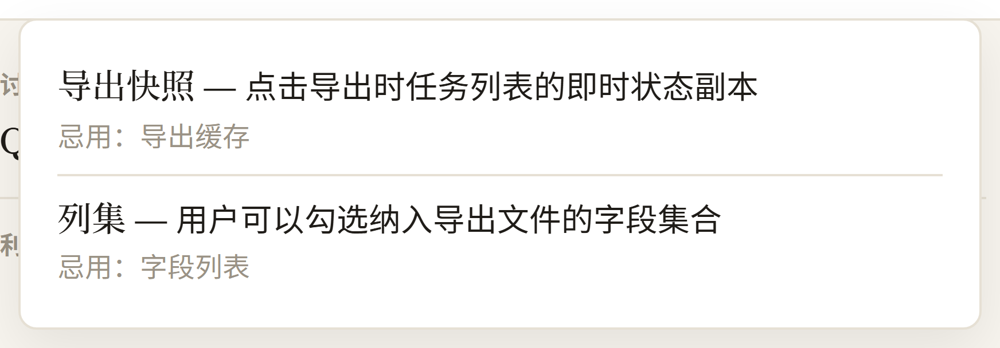

UI 盘问：把方案盘问搬到浏览器里
用卡片页面替代终端里的一问一答，逐题讨论、随手展开利弊，还能先看到原型再动手。
0它解决什么问题
方案讨论的默认方式是逐条盘问：一次一个问题，你答完再问下一个。问题一多，终端就变成一堵滚动读不完的长文，回头翻某个决策很费劲；想就某一道题追问，又会把整条会话搅乱。
「UI 盘问」把提问环节搬到一个本地网页上：每道题是一张卡片（选项 + 高亮推荐 + 为什么推荐），你可以任意顺序作答、攒够了一起发；每道题有独立讨论线程，深挖一个决策不会丢下其他题；需要时还能让 agent 展开利弊对照表，或者把当前设计画成原型 / 架构图。盘问结束自动产出设计文档。
plan.md 结构、deps.json、性能影响分析、Bug 取证）完全一致。
1开启与前置条件
在应用设置 → 技能库里打开「UI 盘问」开关。它带「测试」徽标，且与「批量盘问」互斥——开启一个会自动关掉另一个（两者都只改提问方式，同时生效会让下发的「提问技能」参数自相矛盾）。

| 项目 | 说明 |
|---|---|
| 开关位置 | 应用设置 → 技能库（带「测试」徽标），应用级设置、全局生效 |
| 前置① | 需先在技能库安装 grill-with-ui 技能，否则开关不起作用（设置页会提示未安装） |
| 前置② | 本机需有 Node 20+：agent 会用它起一个只监听本机的页面服务 |
| 生效范围 | 云效议题讨论链路：发起讨论（单条 / 合并 / 计划内）与 直接开始（先做需求澄清） |
| 不生效 | Bug 议题仍走 diagnosing-bugs 根因取证；已定稿方案的执行任务不再盘问 |
2发起一场盘问
和平时一样发起讨论即可，勾选澄清（或在「直接开始」里勾「先做需求澄清」）后，agent 会改走 grill-with-ui，并打印一个本地地址。页面就绪后浏览器会自动打开，不需要你手动点链接。

三栏各管什么
- 左栏：问题清单，按「第 N 轮」分组；带状态标记（已回答 / 未答 / 已重开 / 已推迟 / 已暂存 / 已发送）。
- 中栏：当前题目。选项卡片上高亮的那一项是 agent 的推荐，下方「为什么选 X」说明取舍。
- 右栏：这道题的讨论线程。你的追问和 agent 的回复都留在这里，不干扰其他题。

3作答：暂存、自由顺序、统一发送
点击选项即可选中（推荐项会被 outline 标出）。你在页面上做的所有操作都是暂存状态——可以跨题目任意顺序地答，先想哪道就答哪道，没有「必须按顺序」的限制。
| 操作 | 说明 |
|---|---|
| 点选项 | 暂存为答案；多选类题目（标注「可多选」）可勾选任意组合 |
| 接受推荐 | 多选题目提供「接受推荐 A + B」的快捷链接 |
| 暂存文本 | 选项都不合适时，用自由文本作答（⌘/Ctrl+Enter） |
| 推迟 / 重开 | 把题目推迟到之后，或重新打开一道已答的题 |
| 加入讨论 | 就这道题追问，agent 会在下次发送时回复 |
| 发送给 Agent | 把暂存的全部内容作为一次发送投给 agent（⌘/Ctrl+Enter） |

4逐题讨论：不用一次问完所有事
每道题右侧都有独立的讨论线程。对某道题的判断拿不准时，直接在那里追问——比如「这个字段能不能跟随项目保存？」——agent 会在下一次发送时回复，而其他题目的进度不受影响。

5展开利弊：让选项摊开对比
选项之间难以取舍时，点题目右上角的「展开利弊」。agent 会为这道题的每个选项写一份优缺点对照表（优点 / 缺点两列），并明确写出推荐项的代价——不会只讲推荐项的好话。


这个操作不占暂存位：点击即发送，表格生成后显示在这道题的讨论区；表格若改变结论，题目会标上「推荐已更新」。
6可视化：先看到再动手
页头的「可视化」按钮请 agent 为当前设计画一张图。主题涉及界面时画可点击的原型（落在真实页面语境里，带你项目自己的外观），否则画架构图 / 流程图。原型由子 agent 在后台绘制，不占用盘问主对话的上下文，绘制期间你仍可继续作答。

原型是「假设」，不是结论
- 尚未定的部分按推荐画，并在图上标注为假设，方便你一眼看出哪些还没敲定。
- 反馈写在右侧线程里，随下次发送一起交给 agent 重绘；每版有版本号与一行变更说明。
- 决策变更后原型会标记为「已过期」，点「重新生成」即可纳入最新结论。
- 如果反馈与某个已答题目矛盾，那道题会被重新打开，而不是悄悄改答案。
7术语表：锁住用词
随着讨论推进，agent 会把定型的术语记进页头的「术语」按钮里，包括一句话定义和不建议使用的说法（避免同一概念出现多个叫法）。后续问题都会沿用这些术语。

8收尾：产出设计文档
所有分支走完后，底部会出现醒目的「结束盘问」按钮（会呼吸提示）。点它并确认，agent 会：
- 把全部结论写成一份设计文档，内容包括：摘要、术语与忌用词、问题背景、已锁定决策（含被否选项及原因）、常规选择、已验证事实、风险、已推迟项、未决线程。
- 若存在可视化，先与最终决策校对后，把原型一起导出到文档旁边。
- 页面顶部显示完成横幅，并给出文档路径。
grill-with-ui 的文档结构与方案的机器契约（plan.md / deps.json）不兼容，因此它会写到旁路的辅助文件（如 grill.md），再由方案讨论技能据其内容产出正式的 plan.md 与依赖文件——后续「生成待办 / 回写云效」照常可用。
中途需要歇一会儿也没关系：页面和会话都留在磁盘上，用 /grill-with-ui resume 可以续接，作答进度不丢。
9常见问题
| 现象 | 说明 / 处理 |
|---|---|
| 开关开了没反应 | 先在技能库安装 grill-with-ui；确认本机有 Node 20+；再确认议题不是 Bug（Bug 恒走根因取证）。另外它与「批量盘问」互斥，检查是否被另一个开关顶掉。 |
| 浏览器没自动打开 | 终端里会打印本地地址，手动打开即可。无桌面环境 / 远程终端下自动打开会静默失败，这不影响盘问本身。 |
| 页面开着但 agent 不理我 | 发送后 agent 需要一点时间处理。页面顶部会显示「Agent 工作中 · 用时」，此刻不必重复点发送；发送按钮本身也会带节流提示。 |
| 不小心关掉了页面 | 地址仍在会话里，重新打开即可；已暂存的内容按浏览器存储保留，发送记录也会重放。 |
| 想让图重画 | 在可视化右侧的反馈线程里说明要改什么，随下次发送一起提交；或在过期后点「重新生成」。 |
| 关掉开关后会怎样 | 提问方式退回此前的设置（批量盘问或逐条盘问），方案结构与产物契约不变。 |
10相关文档
- 云效议题完整闭环说明 —— 讨论 / 直接开始 / 生成待办 / 回写云效的全流程
- 操作手册 —— 应用设置、技能库与各模块总览
deps.json 契约、性能影响分析强制分支与 Bug 根因取证一律不变；若使用中遇到问题，关闭开关即可回到原先的提问方式。